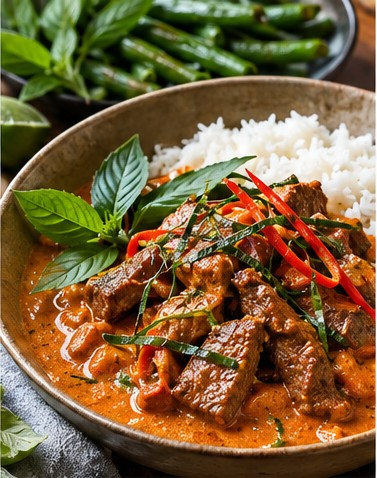

Thai · Dinner · Serves 4 · 40 minutes
Thai Panang Beef Curry (Phanaeng Nuea)

Ingredient amounts are estimates when scaled. Original recipe and AnyList import remain unchanged.
Ingredients
- 1¾ lb sirloin, thinly sliced across the grain
- 1 can (13.5–14 oz) full-fat coconut milk
- 3–4 Tbsp Panang curry paste
- 3 makrut lime leaves, finely shredded, divided
- 1½ Tbsp fish sauce, to taste
- 1–2 tsp palm sugar
- 1/4 cup Thai basil leaves, optional
- 2 cups dry jasmine rice
- 12 oz green beans
- 2 tsp neutral oil
- 1 garlic clove, sliced
- 1 red bell pepper, thinly sliced, optional garnish
Instructions
- Cook jasmine rice according to package directions.
- Scoop thick coconut cream from top of can into a pan. Simmer until glossy and beginning to separate; reduce until thick if stabilized.
- Fry Panang curry paste in coconut cream 2–3 minutes until aromatic.
- Gradually add remaining coconut milk, two lime leaves, fish sauce and palm sugar. Simmer until sauce is thick and concentrated.
- Add sliced beef and gently simmer 2–5 minutes, just until cooked through. Adjust salty-sweet balance and fold in optional Thai basil.
- Stir-fry green beans separately in hot oil, adding sliced garlic for the last minute.
- Serve with rice, shredded remaining lime leaf and optional bell pepper garnish. Keep green beans on the side.